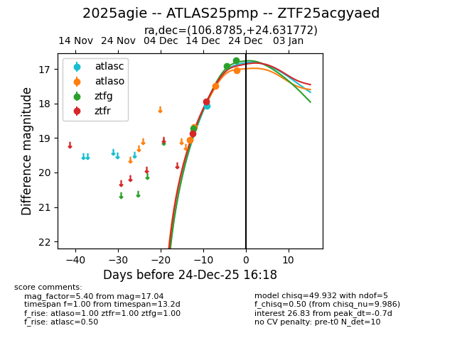
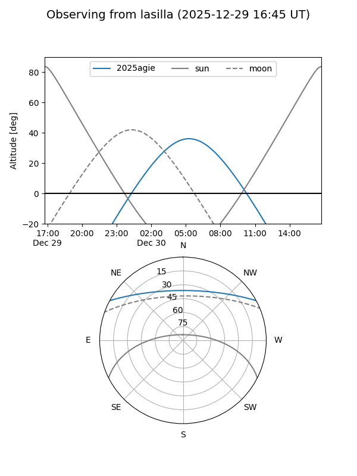
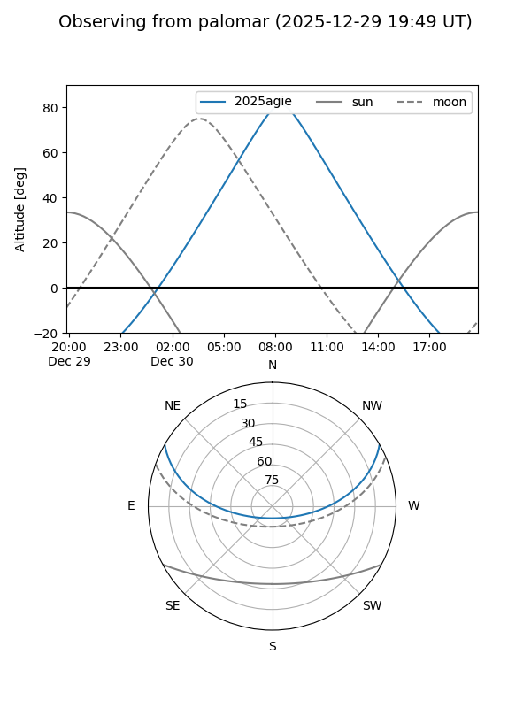
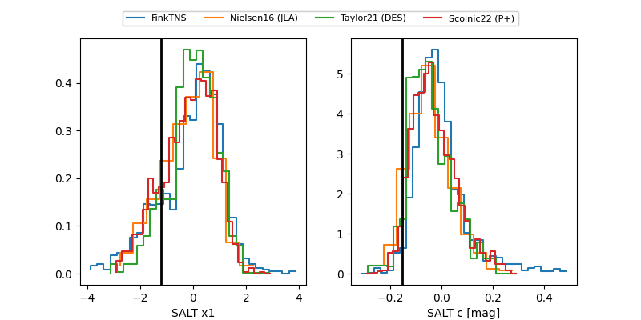

2025agie
Target 2025agie at 2025-12-24 16:20
Aliases and brokers:
FINK: fink-portal.org/ZTF25acgyaed
Lasair: lasair-ztf.lsst.ac.uk/objects/ZTF25acgyaed
ALeRCE: alerce.online/object/ZTF25acgyaed
TNS: wis-tns.org/object/2025agie
YSE: ziggy.ucolick.org/yse/transient_detail/2025agie
alt names
ZTF25acgyaed (ztf,fink_ztf)
2025agie (tns,yse)
ATLAS25pmp (atlas)
Coordinates:
equatorial (ra, dec) = 106.8785,+24.63177
equatorial (HMS+DMS) = 07:07:30.83,+24:37:54.38
galactic (l, b) = (192.2738,+14.28516)
Flags:
Photometry:
last atlasc=18.07, atlaso=17.04, ztfg=16.75, ztfr=17.94
1 atlasc, 4 atlaso, 3 ztfg, 2 ztfr detections
Lightcurve

Visibility


Additional plots
